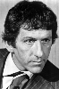

Country:United States, 156 minutes
Spoken languages:English
Genres:Documentary, Drama
Director(s):William Arntz, Betsy Chasse
Writer(s):
Video Codec:Unknown
Number: 2554


Certification:
Storyline:
Interviews with scientists and authors, animated bits, and a storyline involving a deaf photographer are used in this docudrama to illustrate the link between quantum mechanics, neurobiology, human consciousness and day-to-day reality.
Cast: 
Medium: Original DVD,
Loaned: No
Aspect ratio: Unknown